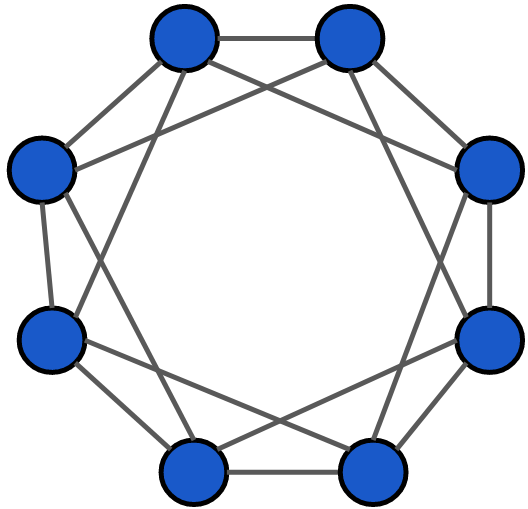

Small-scale datacenters are far more numerous than large-scale DCs yet almost all research has gone into designing better topologies for the hyperscale DCs. We discovered that topology design is a fundamentally different problem at small-scale with different factors at play. Specifically, the asymptotic characteristics as size → ∞ are not relevant. We discovered small-scale topologies with bisection bandwidth O(n) worse asymptotically that outperform existing leaf-spine topologies across diverse workloads!